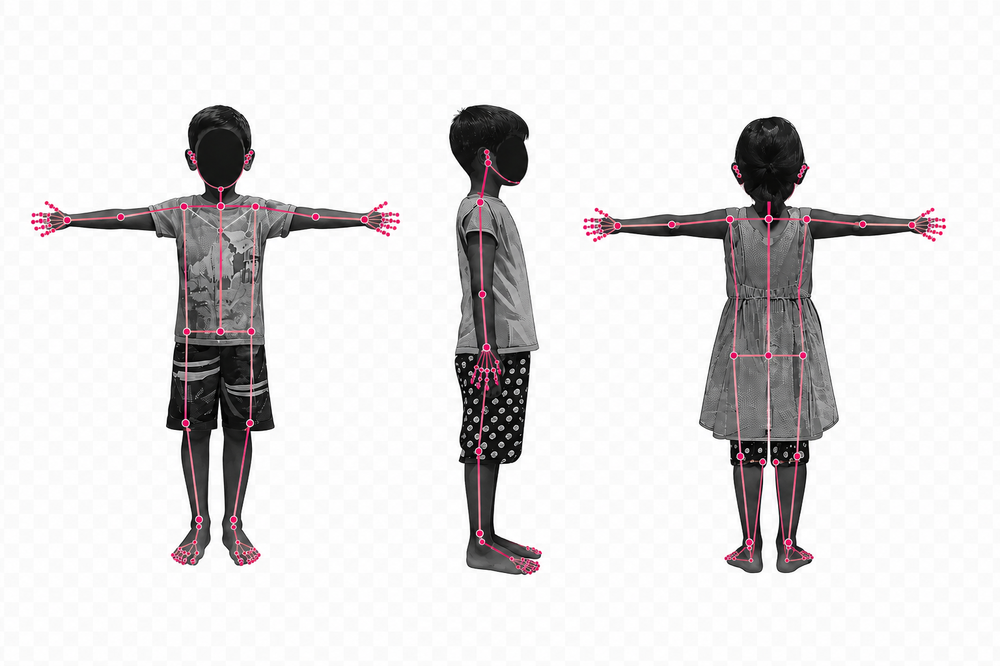

ABOUT
NEWS
PUBLICATIONS
NEWS
TAG meeting update
Read more →
Pilot fieldwork
Read more →
AI pipeline
Read more →

ABOUT
RESEARCH
PUBLICATIONS
PEOPLE
RESOURCES
DASHBOARD
 RESEARCH
RESEARCH PUBLICATIONS
PUBLICATIONS PEOPLE
PEOPLE RESOURCES
RESOURCES DASHBOARD
DASHBOARD RESEARCHPUBLICATIONSPEOPLERESOURCESDASHBOARD
RESEARCHPUBLICATIONSPEOPLERESOURCESDASHBOARD